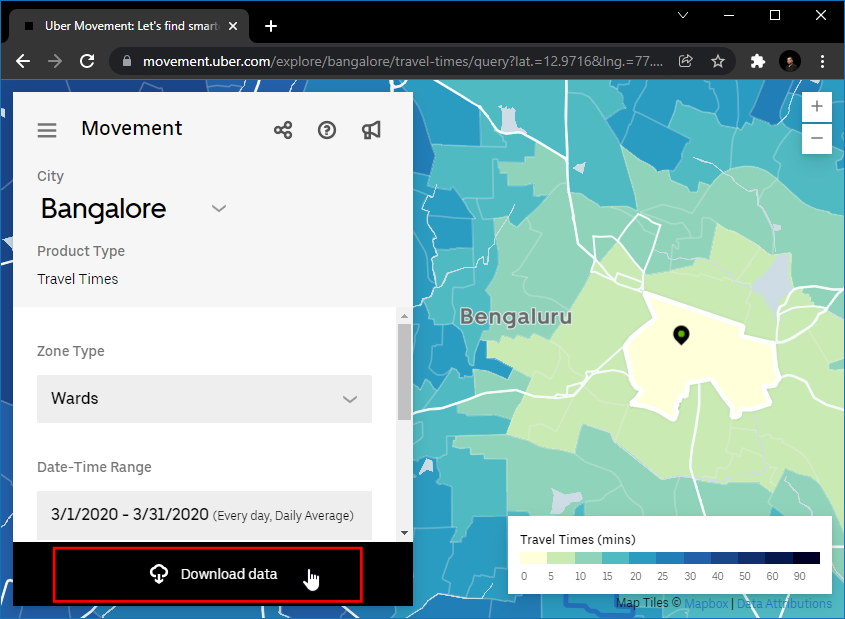
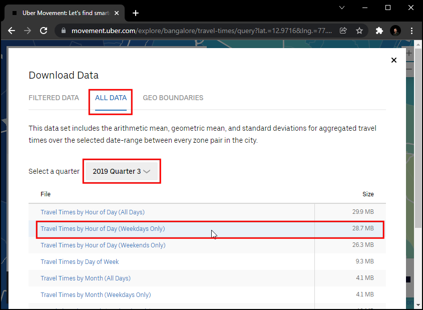
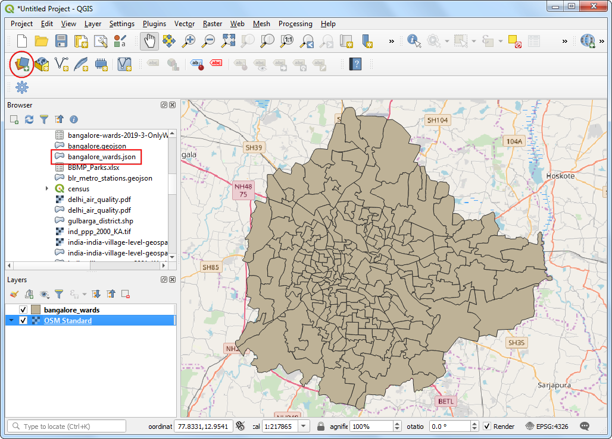
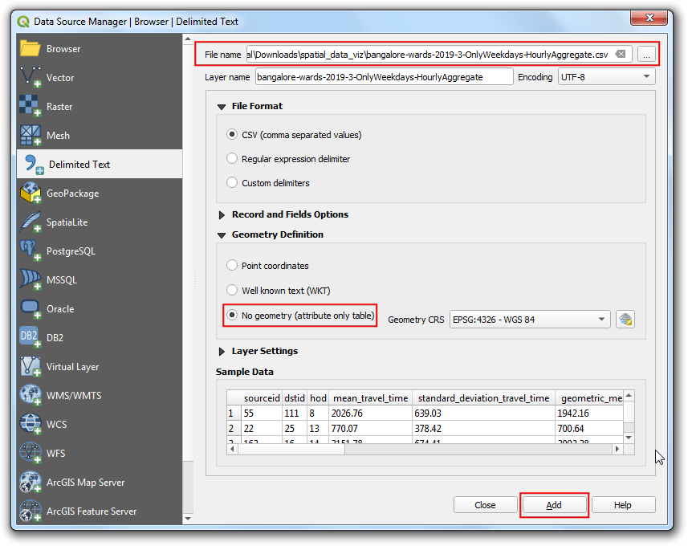
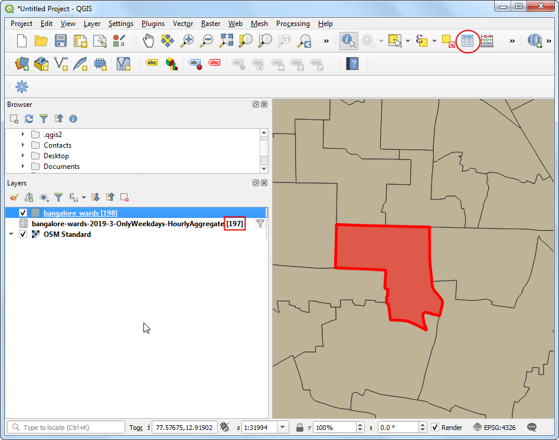

Reistijd-analyse met Uber Movement (QGIS3)¶
Waarschuwing
Uber Movement data has been discontinued [view announcement]. You can still follow the tutorial using the archive data provided in the tutorial and learn the technique of travel time analysis using QGIS.
Uber Movement deelt geanonimiseerde en samengevoegde gegevens voor reistijd voor veel steden in de gehele wereld. Uber Movement’s product Travel Times is een publieke gegevensset die reizen van zone-naar-zone meet in een stad. Deze tijden zijn gebaseerd op feitelijke ritten van Uber en is een nauwkeurige weergave van opstoppingen en verkeerspatronen in de stad. Dit is een grote openlijk toegankelijke gegevensset, samengesteld uit miljoenen feitelijke taxiritten. Deze handleiding laat de technieken zien om met dergelijke samengestelde gegevenssets voor verkeer te werken om analyses voor reistijd uit te voeren in QGIS.
Overzicht van de taak¶
We zullen een samengestelde gegevensset voor verkeer voor de stad Bangalore, India gebruiken om reistijden te zoeken naar een opgegeven locatie in de stad. We zullen ook een Isochrone kaart maken voor een drempel voor de reistijd van 30 minuten.
Andere vaardigheden die u zult leren¶
Een bestand van GeoJSON laden in QGIS
De gegevens ophalen¶
We zullen de gegevensset Travel Times downloaden voor de stad Bangalore, India.
Ga naar de website van Uber Movement en klik op de Cities.

Zoek naar
Bangalore.

Klik op Download data.

In de pop-up van
Download data, schakel naar GEO BOUNDARIES. Het zal het GeoJSON-bestand voor de wijken van Banglore bevatten. Accepteer de licentie-informatie en klik opBANGLORE_WARDS.JSONom het te downloaden.

Then switch to
ALL DATA. This data is available from 2016 to 2020, and each year is divided into 4 quarters. We will download the data for2019 Quarter 3. Select it and click theTravel Times by Hour of Day (Weekdays Only). This file will contain all anonymous information about the weekday uber travel in Bangalore from July to September 2019.

Voor het gemak kunt u direct de gegevensset downloaden vanaf de links hieronder:
bangalore-wards-2019-3-OnlyWeekdays-HourlyAggregate.csv
Gegevensbron: [UBER]
Procedure¶
Zoek naar het bestand
bangalore_wards.jsonin het paneel Browser en sleep het naar het kaartvenster. Vervolgens zullen we een laag met een basiskaart laden vanaf OpenStreetMap. We zullen de plug-in QuickMapServices gebruiken om toegang te krijgen tot de basiskaart. Ga, als de plug-in eenmaal is geïnstalleerd, naar . Een basiskaart tegellaag van OpenStreetMap zal worden toegevoegd aan het project. Klik vervolgens op de knop Databronnen beheren openen.

Schakel naar de tab Tekengescheiden tekst. Blader naar het bestand bangalore-wards-2019-3-OnlyWeekdays-HourlyAggregate.csv` en selecteer dat. Selecteer de optie Geen geometrieën (alleen attributentabel), omdat het CSV-bestand slechts tabulaire gegevens bevat, en klik op Toevoegen.

De laag
bangalore-wards-2019-3-OnlyWeekdays-HourlyAggregatezal worden toegevoegd aan het paneel Lagen. Deze laag bevat geanonimiseerde en samengestelde gegevens over reislocaties tussen verschillende zones van de stad. Elke rij van de tabel bevat kolommen voor de bronzone (sourceid), doelzone (dstid), uur van de dag (hod) en gemiddelde reistijd, samengesteld uit alle reizen met deze zone op dat uur (mean_travel_time). U kunt meer te weten komen over deze gegevensset in de Movement: Travel Times Calculation Methodology (pdf). Laten we, voordat we doorgaan, controleren hoeveel gegevensrecords aanwezig zijn in de laag. Klik met rechts op de laagbangalore-wards-2019-3-OnlyWeekdays-HourlyAggregateen selecteer Aantal objecten tonen. Het totale aantal rijen in de tabel zal ernaast worden weergegeven. Dit is een vrij grote tabel, maar we hebben niet alle rijen met gegevens nodig voor onze analyse. We zullen nu onze doellocatie identificeren en deze tabel filteren op de records daarvoor.

We willen alle gebieden berekenen die bereikbaar zijn binnen 30 minuten vanaf een specifieke locatie. Met de basiskaart OSM Standard kunt u de locatie zoeken. Selecteer dan de laag
bangalore_wards, gebruik het gereedschap Objecten identificeren en klik erop. De resultaten zullen de attributen van de zone weergeven die de locatie bevat. Voor deze handleiding nemen we aan dat onze doellocatie ligt in de zone JP Nagar met de MOVEMENT_ID 193.

We kunnen de records voor de reistijd filteren to slechts die welke deze zone als doel hebben. We kunnen ook onze analyse beperken tot het spitsuur in de morgen van 9am - 10am. Klik met rechts op de laag
bangalore-wards-2019-3-OnlyWeekdays-HourlyAggregateen selecteer Filteren.

Voer de volgende filterexpressie in en klik op OK.
"dstid" = 193 AND "hod" = 9
Back in the main QGIS window, you will see that the number of records in the filtered table are now down to just 197. Since there are a total of 198 zones in the city, we have records of travel times between the 1 destination ward and 197 source zones. Open the attribute table of both the layers using the Open Attribute Table button in the Attributes toolbar.

Nu hebben we de vorm van de wijk in de laag
bangalore_wardsen tabulaire informatie in de laagbangalore-wards-2019-3-OnlyWeekdays-HourlyAggregate. We kunnen de informatie voor de attributen samenvoegen met de vormen met een gezamenlijk attribuut. Hier zijn dat de kolomMOVEMENT_IDvan de laagbangalore_wardsen de kolomsourceidvan de laagbangalore-wards-2019-3-OnlyWeekdays-HourlyAggregatedie unieke identificatie zijn voor wijken, die kunnen worden samengevoegd. Deze bewerking wordt een Table Join genoemd.

Before we can join these two layers, we must ensure that the values in both columns match exactly. Thought they appear the same, they are of different type. Since GeoJSON format has no way of specifying property types, all values are assumed to be of the type String - i.e. Text. But when we import a CSV to QGIS, by default, QGIS tries to determines the types of the columns based on the values and assign appropriate field type. For the CSV file, the data type for the column
sourceidwas assigned as Integer. So we need to convert the column from the GeoJSON to an Integer type as well. Go to . Double-click to launch it.

Choose
bangalore_wardsas the Input Layer. Name the Field Name asjoinfieldand select the Result field type asInteger. EnterMOVEMENT_IDas the Expression. Click the … button next to the Calculated and select Save to File… then enter the name of the output file asbangalore_wards_fixed.gpkg. Click Run. Close the field calculator.

Een nieuwe laag
bangalore_wards_fixedzal worden toegevoegd aan het paneel Lagen. Nu zijn we klaar om het samenvoegen uit te voeren. Ga naar . Dubbelklik erop om het te starten.

Selecteer
bangalore_wards_fixedals de Invoerlaag enjoinfieldals het Tabelveld. Selecteerbangalore-wards-2019-3-OnlyWeekdays-HourlyAggregateals de Invoerlaag 2 ensourceidals het Tabelveld 2. Noem de Samengevoegde laag alsuber_travel_times.gpkgen klik op Uitvoeren.

Een nieuwe laag
uber_travel_timeszal worden toegevoegd aan het paneel Lagen. Laten we die opmaken om het resultaat van het samenvoegen te visualiseren. Klik op Paneel Laag opmaken openen. Selecteer de rendererGradueelenmean_travel_timeals de Waarde. Selecteer een kleurverloop en klik op Classificeren. U zult zien dat de kaart oplopende reistijden weergeeft, hoe verder u van het doel afgaat.

Maar we zoeken naar gebieden die binnen 30 minuten reistijd liggen om ze te analyseren en uit te nemen, dus we hebben nog wat werk te doen. Schakel voor de opmaak terug naar de renderer Enkel symbool. Klik met rechts op de laag
uber_travel_timesen selecteer Filteren.

Voer de volgende expressie in om alle zones binnen 1800 seconden (30 minuten) van gemiddelde reistijd te selecteren. We dienen ook onze doelzone op te nemen die een reistijd heeft van 0.
"mean_travel_time" <= 1800 OR "MOVEMENT_ID" = 193
De laag zal nu de cluster van polygonen weergeven die het door ons gewenste gebied omvat. We zullen ze nu allemaal samenvoegen tot één enkele polygoon. Ga naar . Dubbelklik erop om het te starten.

Selecteer
uber_travel_timesals de Invoerlaag. Geef de laag Ontbonden de naam30min_isochrone.gpkg. Klik op Uitvoeren.

Een nieuwe laag
30min_isochronezal worden toegevoegd aan het paneel Lagen die het resultaat van onze analyse weergeeft.

If you want to give feedback or share your experience with this tutorial, please comment below. (requires GitHub account)